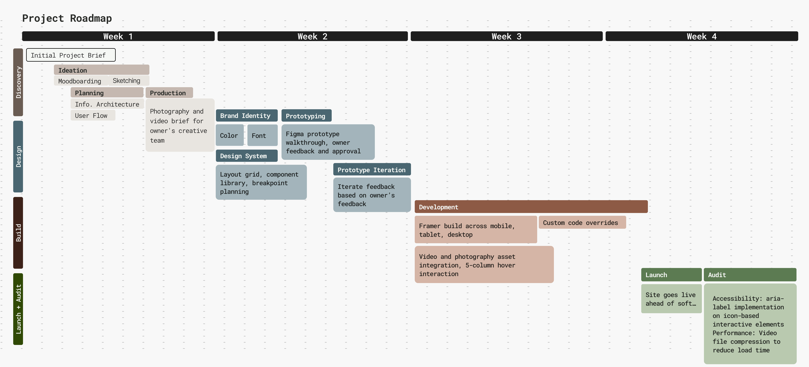
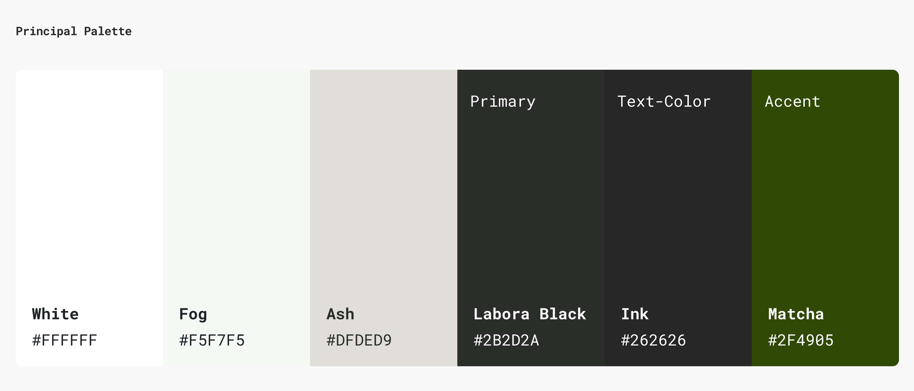

Problem / Challenge
Labora Cafe had a physical space nearly ready to open and nothing else. No color system, no typography, no web presence. Just a logo, a set of brand adjectives, an unfinished space, and a four-week window to launch a website ahead of their soft opening. They needed to establish their brand, drive foot traffic, and build the infrastructure for long-term customer retention before their first customer walked in.
My Role
Sole designer and developer across 4 weeks. I owned the full stack: brand identity development, UX strategy, visual design, copywriting, Framer development with custom code overrides, and multi-breakpoint implementation across mobile, tablet, and desktop.
Process
The owner handed me a list of brand adjectives. My job was to translate them into a design system before a single frame was built. Hover each word to see what it became.
Discovery + Design
Two weeks mapping site architecture, building the design system, presenting mood boards, and coordinating the photography and video brief with the owner's production team.
Build + Launch
Two weeks in Framer with custom code overrides for features the platform did not natively support, built across mobile, tablet, and desktop breakpoints.

Key Design Decisions
1. Typography as Brand Voice
Labora had no type system. I chose Bell Gothic Std, a compressed utilitarian grotesque with an almost bureaucratic precision, paired with Magda Clean Mono, which brought the laboratory concept directly into the letterforms. No accent color anywhere in the palette. The brand communicates entirely through restraint, texture, and type. Sophisticated yet approachable lives in that pairing.
2. The 5-Column Homepage Interaction
Most cafe websites are static: a hero image, a menu link, a contact page. I designed the homepage as a full-screen navigation experience. Five columns map directly to the five site sections, each labeled with its destination and a short descriptor. On hover, the background video switches to the video from that respective page. Every element serves wayfinding. The same video a user previews on the homepage is the video they land on when they navigate there, creating continuity across the experience.
3. Copywriting as Design Material
I wrote the site copy alongside the visual design, treating language as a design material. The bracket notation [about us], the Latin etymology LabOra (Latin) / la.bo.ra / to work, and the headline "Work in Quiet Luxury, Distilled in Coffee" all came from the same design thinking that drove the typography choice. The owner adopted the headline for their merchandise. The copy became part of the brand identity.
4. Color as Restraint
Labora came with no color system. I made a deliberate choice to build a monochromatic palette — no accent color, no decorative hues. Six values from white to near-black, with a single Matcha green reserved exclusively for CTAs and interactive elements. The restraint was the point. When everything else is neutral, the product photography does all the work.

5. Retention Infrastructure
The brief included a retention goal. I translated that into concrete features: an Order Online CTA in the nav bar, a featured drink section on the menu page, a contact form for event collaborations, a careers page with a custom file upload form built via code override, and social media integration throughout.
Outcomes & Metrics
1,100 unique visitors and 2,600 page views in the first two weeks after launch, driven by organic search, Instagram, and word of mouth. Google PageSpeed Insights returned a perfect 100 in both SEO and best practices.
Post-launch auditing surfaced two issues. First, accessibility gaps from unlabeled interactive elements: several links relied on icons without descriptive text, creating screen reader failures. I resolved this by implementing aria-label attributes on all icon-based interactive elements. Second, performance degradation from uncompressed video assets. I compressed the video files to reduce load time. The site launched on schedule, ahead of the soft opening.
1.1k
Unique visitors in first 2 weeks
2.6k
Page views in first 2 weeks
100
PageSpeed SEO score
Learnings & Reflection
Working fast forces prioritization. Four weeks from blank canvas to live site meant every decision had weight. There was no time to second-guess a type choice or redesign a page. What surprised me most was how much the work extended beyond the screen: coordinating asset production with the photographer, writing copy that became merchandise, building features the platform did not natively support.
The best freelance projects blur the line between designer, developer, and creative director. This was one of them.